万丹宮/南投縣
台湾珍寺修行、お次は南投縣に向かう。
ここにチョットありえないほど奇天烈な道教寺院があるというのだ。
南投の市街地から数キロ。人家もまばらな場所にこの寺院はある。
境内に一歩足を踏み入れた瞬間、普通のお寺ではないことだけはよ〜く、よ〜く判りました。
どうですか！お客さん。
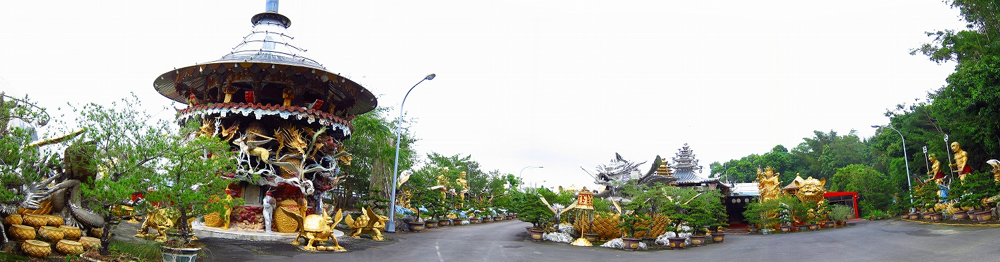
木々の合間に見え隠れするキンキラ＆ギンギラに彩られた得体の知れない動物、カミサマ、建物、その他諸々…。
特に腰を抜かしそうになったのがこちら。
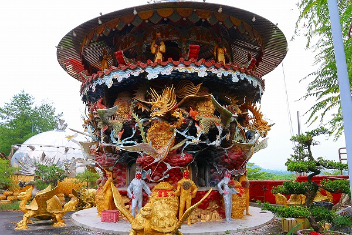
異様なまでにデコラティブな焚紙炉。
台湾の寺院では祖霊に紙幣や祭文を燃やすのが慣わしとなっており、それらを燃やす焚紙炉が必ずといっていいほどある。
とはいえ普通は焼却炉っぽいものや精々レンガ積みの仏塔っぽい形をしたものだが、ここのはキンキラの龍がうねり、鳳凰が舞う、グランドゴージャス版の香炉なのですよ。
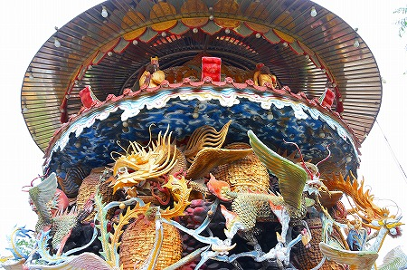
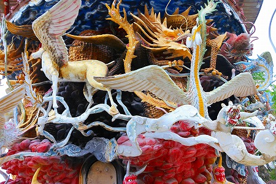
よく見たらペガサスも混ざっているような…。
ぐるりを囲むは金の鬼と銀の鬼。
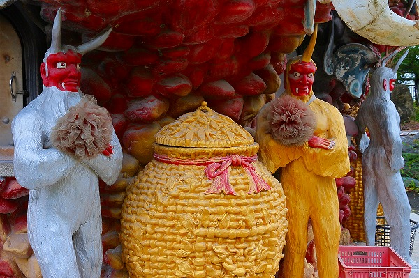
手に持っているのは造花などではなく100円ショップの台所用品に置いてあるアレの巨大版だな。
しかもメチャクチャ色あせちゃってるぞ。
金の鬼は角がひとつ。銀の鬼は角がふたつあった。
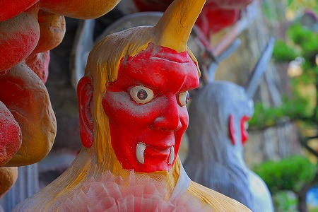
お寺のおじさんがやってきてて、おもむろに紙を燃やす。
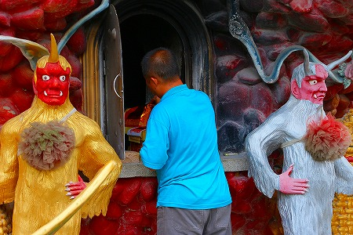
金銀の鬼に囲まれて紙を燃やす様子は失禁しそうなほど面白い光景だったが、おじさんにとってはごくごく日常の業務らしく淡々とタスクをこなしていた。
キンキラ要素だけに目が行きがちだが、ギンギラ要素も見逃せない。
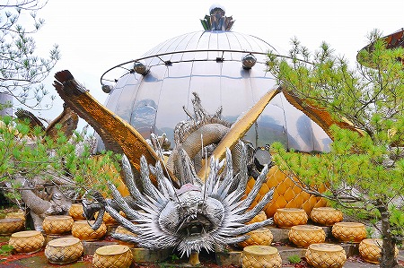
あちこちに点在するシルバニアドラゴン。
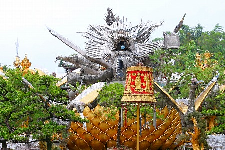
ステンレスの薄い板で出来ている。
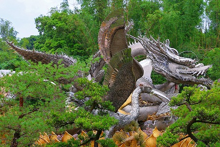
近寄ってみると…
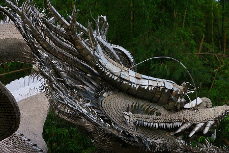
鱗の一枚一枚、毛の一本一本までステンレスで細かく組み合わされている。
その超絶の技法にはただただ驚くほかない。
こちらは鳳凰か。
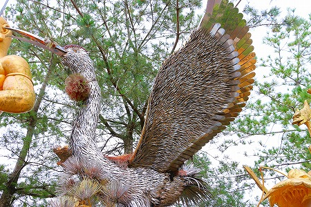
ステンレスで出来た薄い皮をまとっているのでまるで銀色の羽のようだ。
本堂の両サイドにいるのは仁王サマなのだろうか。
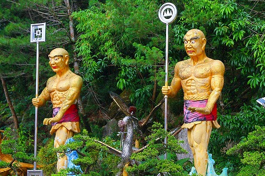
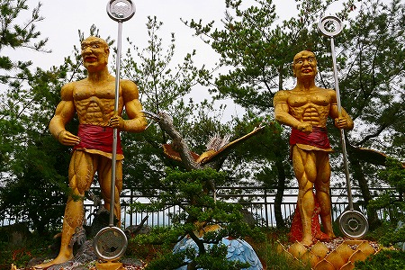
金粉マッチョなお方が謎の武具を持って立っていた。
その他、境内には正体不明の動物やカミサマが金ぴかオーラを発散しつつ跋扈していた
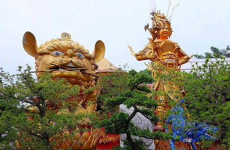
本堂入り口。
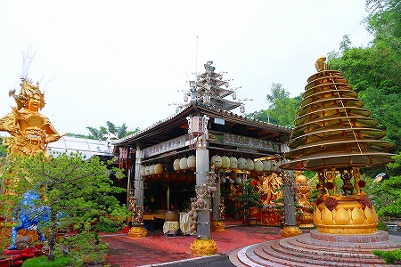
入り口上部の飾り。抽象化された龍がカッコイイ。
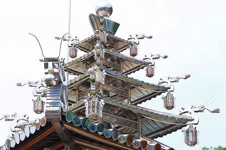
本堂前の香炉。巨大な屋根を支えているのはたった4人のガニマタバンザイ人形。
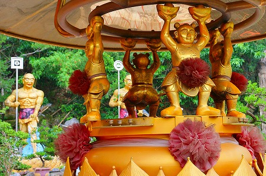
しかも両手に持ったピンポイントの8点で支えているじゃないか！
これほど金と銀だけで出来た寺を私は知らない。
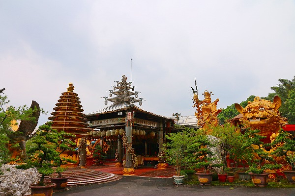
キョウト、キンカクジゴールデンテンプル、ビューティフル！とか言ってる輩はココに来たほうがよっぽど興奮すると思う。
かく言う私自身が興奮しちゃって基本小走り状態になっちゃってましたもん。
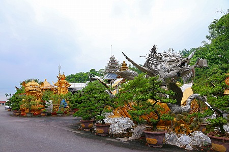
焼却ノルマを終えたおじさんに促され本堂の中に入る。
それにしてもこのガニマタバンザイ人形、多すぎるぞ。
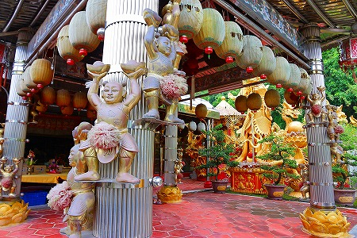
中に入ってさらにビックリ！
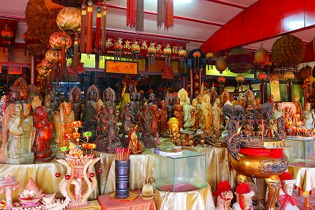
道教のカミサマが佃煮に出来るほど大量に密集している。
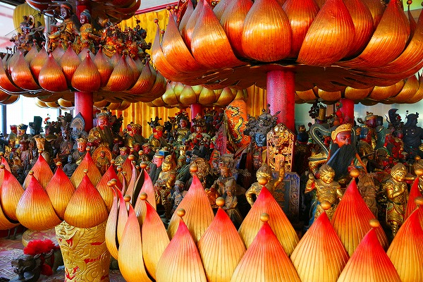
一体何をどうして良いものやら。拝む対象が多すぎ。
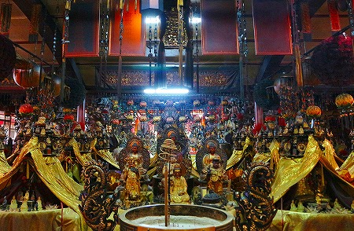
ほとんどカミサマの間を縫って進んでいくような状態に。
気分的にはドンキホーテで買い物している感じ。倒さないように、倒さないようにって…。
回廊の壁もこんな感じ。
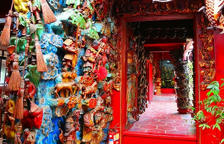
びっっっっっっっしりと彫刻が施されており、もう頭がクラクラしてきます。
あまりの過剰な装飾に酒も飲んでないのに酩酊状態になりそう…。
頭が象？猪？…の人間がいたりして中々素通りさせてもらえませぬ。
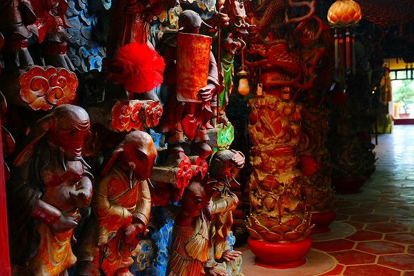
途中、こんなFRPの邪悪な龍もいます。
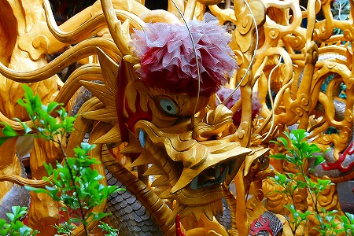
んで、最奥部。
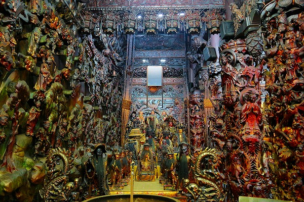
最早何処を見て何をすればいいのか判らない。
まるで聖マッスルの人間城。
カミサマが多すぎてハイパーインフレ状態に陥っているじゃないか！
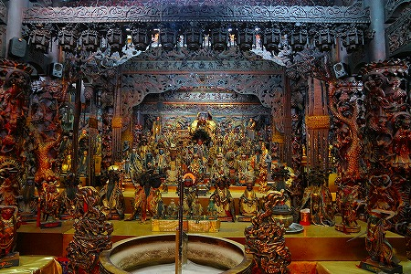
でもそのハイパーインフレ具合こそが道教世界における宗教的恍惚感の真髄と見たぞ。
ウットリしすぎてもう、オムツパンパンですわ。
天井で吼える龍ももちメタリック仕様。
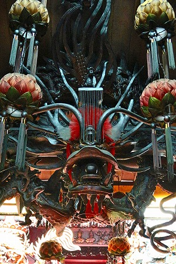
やっとの思いで本堂から解放される。って私が勝手に興奮してじっくり見ていただけなんすけどね。
ああ、外の空気が美味い。あのデカいお線香って妙にいがらっぽいんだよねえ。
そういえば堂内のあちこちに線香が手向けられていたなあ。我々以外の参拝客はいなかったのに。
しかし。
まだまだ終わらないのである。
本堂の奥に進むと金色のドーム屋根がお待ちかね。ここにもガニマタバンザイ人形が8点支持する香炉がある。
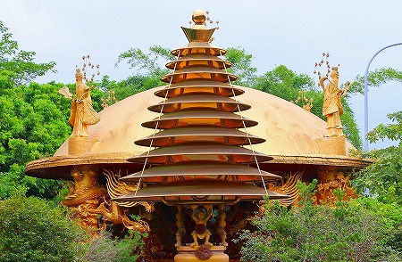
中はこんな。
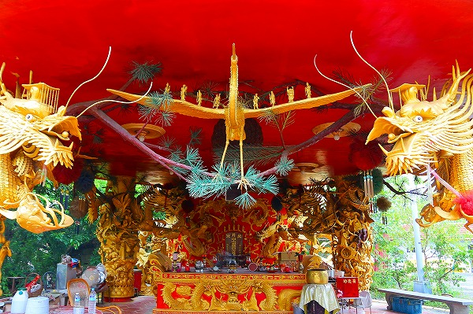
中央の鳳凰の両翼にカミサマが乗っているのが素敵だ。
両脇を固めるビックリ顔の龍も素敵だ。
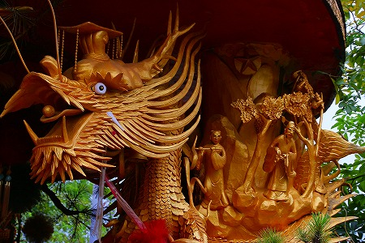
いやはや濃すぎて濃すぎて気絶しそうな寺だったぜ〜。
…と思ってたらさらに続きがあるようだ。
コンクリのへんな動物軍団に誘われるままに進むと…。
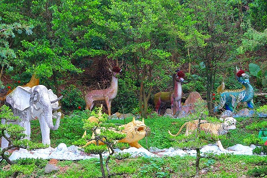
やたら勢いの良いアイテムが。
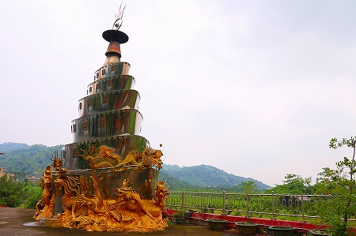
金色に輝くのは元寶という中国の金塊を積み重ねたもの。まるで宝船、というより金ぴかの戦艦のようだ。
ホラ、先ほどのガニマタバンザイ人形が両手に持っているのが元寶ね。
中国ではかつて金はこの形状で取引されたのだとか。
今では財産の象徴として道教寺院に行くと必ず目にするラッキーアイテムだ。
その傍らにはこれまた意味もなく金ぴかな祠が。
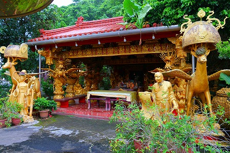
龍と鳳凰の入り乱れる堂内。
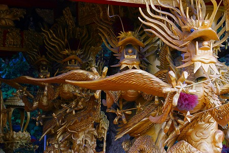
手前の鹿は冠をかぶっているのだろうか。
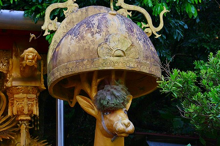
…角、邪魔そうですね…。
おとぎの国レベルの極上の珍寺だったな。